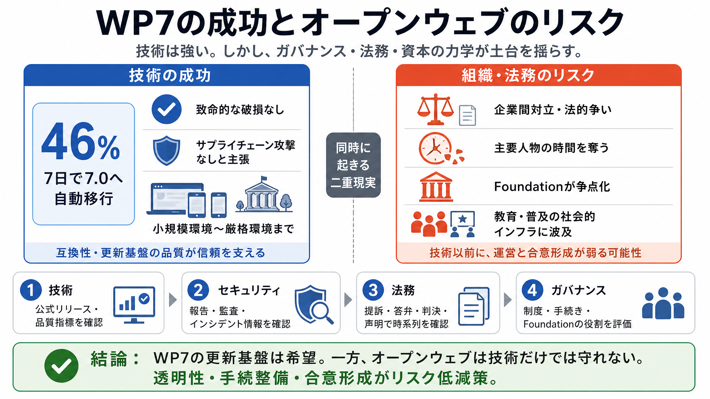

WP Engine Inc. v Automattic Inc. and Matthew Charles Mullenweg [pdf]
Silver Lake and WPE's legal attacks may impact my ability to provide free services on WordPress.org in the future, espec…

WP7の成功と緊急警鐘
WordPress 7の技術的進捗を称えつつ、同時期の対立がコミュニティの土台を傷つけ得る——という主張を要約・分析します。
更新は順調、しかし
技術の成功だけではオープンウェブは守れない、という危機感が中心です（成功と同時にリスクが進む）。
自動移行の実績
7.0への移行が短期間で進み、重大な破損がないことを示す——という技術面の強い根拠が提示されています。
セキュリティ前提
“サプライチェーン攻撃なし”を強調し、セキュリティ問題がないという前提で更新の安心感を積み上げています。
技術の裏側で
リリースが理想通りでなかった理由として、WP Engineへの攻撃（または攻撃とされる事案）による“時間の奪取”が挙げられます。
紛争が運営へ
企業間の法的争いが、開発・運営・判断の速度を下げ、コミュニティの前進を間接的に鈍らせ得るという構図です。
技術 vs 組織
同じ記事でも、技術の事実（更新/品質）と、法務・組織の評価（因果/危機）は性格が違います。
財団が争点に
WordPress Foundation（非営利）が争点化し得る、という危機感が示されます。
事実の強さ
本文は強い感情・比喩を多用しますが、具体的な裁判資料や公的根拠への直接リンクが十分でない、と読み手は判断できます。
読むための手順
感情は“論点のヒント”、事実は“検証対象”として扱うと、理解の精度が上がります。
中心メッセージ
結論は「技術は強い可能性が高い」一方で「外部の資本・法務がリスクを増幅」し得る、という二重構造です。
一次情報を確認
この要約は提供された本文情報に基づくため、最終判断は一次資料（公式・裁判・セキュリティ）で補強してください。
Silver Lake and WPE's legal attacks may impact my ability to provide free services on WordPress.org in the future, espec…
Automattic Inc., et al*., a case in which the Firm represents WPEngine, an internet hosting company, that recently came …
WP Engine brought the lawsuit after Mullenweg called the hosting company a “cancer” to WordPress, accusing WP Engine and…
Thus, WPE is not engaged in misleading and deceiving customers and consumers, as Mullenweg Case 3:24-cv-06917 Document 1…
WP Engine’s uses of those marks to describe its services – as all companies in this space do – are fair uses under settl…